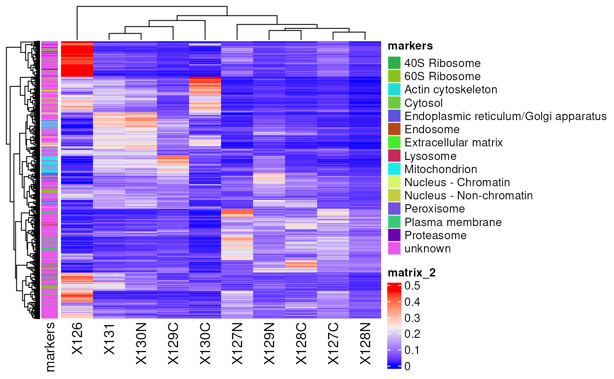

Data visualization from a QFeatures object
Laurent Gatto
Source:vignettes/Visualization.Rmd
Visualization.RmdAbstract
This vignette describes how to visualize quantitative mass spectrometry data contained in a QFeatures object. This vignette is distributed under a CC BY-SA license.
Preparing the data
To demonstrate the data visualization of QFeatures, we
first perform a quick processing of the hlpsms example
data. We load the data and read it as a QFeautres object.
See the processing vignette
for more details about data processing with QFeatures.
library("QFeatures")
data(hlpsms)
hl <- readQFeatures(hlpsms, quantCols = 1:10, name = "psms")We then aggregate the psms to peptides, and the peptodes to proteins.
hl <- aggregateFeatures(hl, "psms", "Sequence", name = "peptides", fun = colMeans)## Your row data contain missing values. Please read the relevant
## section(s) in the aggregateFeatures manual page regarding the effects
## of missing values on data aggregation.## Aggregated: 1/1
hl <- aggregateFeatures(hl, "peptides", "ProteinGroupAccessions", name = "proteins", fun = colMeans)## Aggregated: 1/1We also add the TMT tags that were used to multiplex the samples. The
data is added to the colData of the QFeatures
object and will allow us to demonstrate how to plot data from the
colData.
hl$tag <- c("126", "127N", "127C", "128N", "128C", "129N", "129C",
"130N", "130C", "131")The dataset is now ready for data exploration.
Exploring the QFeatures hierarchy
QFeatures objects can contain several assays as the data
goes through the processing workflow. The plot function
provides an overview of all the assays present in the dataset, showing
also the hierarchical relationships between the assays as determined by
the AssayLinks.
plot(hl)
This plot is rather simple with only three assays, but some
processing workflows may involve more steps. The feat3
example data illustrates the different possible relationships: one
parent to one child, multiple parents to one child and one parent to
multiple children.

Note that some datasets may contain many assays, for instance because
the MS experiment consists of hundreds of batches. This can lead to an
overcrowded plot. Therefore, you can also explore this hierarchy of
assays through an interactive plot, supported by the plotly
package (Sievert (2020)). You can use the
viewer panel to zoom in and out and navigate across the tree(s).
plot(hl, interactive = TRUE)Basic data exploration
The quantitative data is retrieved using assay(), the
feature metadata is retrieved using rowData() on the assay
of interest, and the sample metadata is retrieved using
colData(). Once retrieved, the data can be supplied to the
base R data exploration tools. Here are some examples:
- Plot the intensities for the first protein. These data are available
from the
proteinsassay.
plot(assay(hl, "proteins")[1, ])- Get the distribution of the number of peptides that were aggregated
per protein. These data are available in the column
.nfrom the proteinrowData.
hist(rowData(hl)[["proteins"]]$.n)
- Get the count table of the different tags used for labeling the
samples. These data are available in the column
tagfrom thecolData.
table(hl$tag)##
## 126 127C 127N 128C 128N 129C 129N 130C 130N 131
## 1 1 1 1 1 1 1 1 1 1Using ggplot2
ggplot2 is a powerful tool for data visualization in
R and is part of the tidyverse package
ecosystem (Wickham et al. (2019)). It
produces elegant and publication-ready plots in a few lines of code.
ggplot2 can be used to explore QFeatures
object, similarly to the base functions shown above. Note that
ggplot2 expects data.frame or
tibble objects whereas the quantitative data in
QFeatures are encoded as matrix (or
matrix-like objects, see ?SummarizedExperiment) and the
rowData and colData are encoded as
DataFrame. This is easily circumvented by converting those
objects to data.frames or tibbles. See here
how we reproduce the plot above using ggplot2.
library("ggplot2")
df <- data.frame(rowData(hl)[["proteins"]])
ggplot(df) +
aes(x = .n) +
geom_histogram()
We refer the reader to the ggplot2 package website for more
information about the wide variety of functions that the package offers
and for tutorials and cheatsheets.
Another useful package for quantitative data exploration is
ComplexHeatmap (Gu et al.
(2016)). It is part of the Bioconductor project (Gentleman et al. (2004)) and facilitates
visualization of matrix objects as heatmap. See here an example where we
plot the protein data.
library(ComplexHeatmap)
Heatmap(matrix = assay(hl, "proteins"),
show_row_names = FALSE)ComplexHeatmap also allows to add row and/or column
annotations. Let’s add the predicted protein location as row
annotation.
ha <- rowAnnotation(markers = rowData(hl)[["proteins"]]$markers)
Heatmap(matrix = assay(hl, "proteins"),
show_row_names = FALSE,
left_annotation = ha)
More advanced usage of ComplexHeatmap is described in
the package reference book.
Advanced data exploration
In this section, we show how to combine in a single table different
pieces of information available in a QFeatures object, that
are quantitation data, feature metadata and sample metadata. The
QFeatures package provides the longForm()
function that converts a QFeatures object into a long
table. Long tables are very useful when using ggplot2 for
data visualization. For instance, suppose we want to visualize the
distribution of protein quantitation (present in the
proteins assay) with respect to the different acquisition
tags (present in the colData) for each predicted cell
location separately (present in the rowData of the assays).
Furthermore, we link the quantitation values coming from the same
protein using lines. This can all be plotted at once in a few lines of
code.
lf <- longForm(hl[, , "proteins"],
rowvars = "markers",
colvars = "tag")## Warning: 'experiments' dropped; see 'drops()'## harmonizing input:
## removing 20 sampleMap rows not in names(experiments)
ggplot(data.frame(lf)) +
aes(x = tag,
y = value,
group = rowname) +
geom_line() +
facet_wrap(~ markers, scales = "free_y", ncol = 3)
longForm() allows to retrieve and combine all available
data from a Qfeatures object. We here demonstrate the ease
to combine different pieces that could highlight sample specific and/or
feature specific effects on data quantitation.
Interactive data exploration
Finally, a simply shiny app allows to explore and
visualise the respective assays of a QFeatures object.
display(hl)
QFeatures interactive interface: heatmap of the peptide
assay data.

QFeatures interactive interface: quantitative peptide assay
data.

QFeatures interactive interface: peptide assay row data
A dropdown menu in the side bar allows the user to select an assay of interest, which can then be visualised as a heatmap (figure @ref(fig:heatmapdisplay)), as a quantitative table (figure @ref(fig:assaydisplay)) or a row data table (figure @ref(fig:rowdatadisplay)).
Session information
## R version 4.5.1 (2025-06-13)
## Platform: x86_64-pc-linux-gnu
## Running under: Ubuntu 24.04.3 LTS
##
## Matrix products: default
## BLAS: /usr/lib/x86_64-linux-gnu/openblas-pthread/libblas.so.3
## LAPACK: /usr/lib/x86_64-linux-gnu/openblas-pthread/libopenblasp-r0.3.26.so; LAPACK version 3.12.0
##
## locale:
## [1] LC_CTYPE=en_US.UTF-8 LC_NUMERIC=C
## [3] LC_TIME=en_US.UTF-8 LC_COLLATE=en_US.UTF-8
## [5] LC_MONETARY=en_US.UTF-8 LC_MESSAGES=en_US.UTF-8
## [7] LC_PAPER=en_US.UTF-8 LC_NAME=C
## [9] LC_ADDRESS=C LC_TELEPHONE=C
## [11] LC_MEASUREMENT=en_US.UTF-8 LC_IDENTIFICATION=C
##
## time zone: UTC
## tzcode source: system (glibc)
##
## attached base packages:
## [1] grid stats4 stats graphics grDevices utils datasets
## [8] methods base
##
## other attached packages:
## [1] ComplexHeatmap_2.25.2 ggplot2_4.0.0
## [3] QFeatures_1.19.4 MultiAssayExperiment_1.35.9
## [5] SummarizedExperiment_1.39.2 Biobase_2.69.1
## [7] GenomicRanges_1.61.5 Seqinfo_0.99.2
## [9] IRanges_2.43.5 S4Vectors_0.47.4
## [11] BiocGenerics_0.55.4 generics_0.1.4
## [13] MatrixGenerics_1.21.0 matrixStats_1.5.0
## [15] BiocStyle_2.37.1
##
## loaded via a namespace (and not attached):
## [1] tidyselect_1.2.1 dplyr_1.1.4 farver_2.1.2
## [4] S7_0.2.0 fastmap_1.2.0 lazyeval_0.2.2
## [7] digest_0.6.37 lifecycle_1.0.4 cluster_2.1.8.1
## [10] ProtGenerics_1.41.0 magrittr_2.0.4 compiler_4.5.1
## [13] rlang_1.1.6 sass_0.4.10 tools_4.5.1
## [16] igraph_2.2.0 yaml_2.3.10 knitr_1.50
## [19] S4Arrays_1.9.1 labeling_0.4.3 htmlwidgets_1.6.4
## [22] DelayedArray_0.35.3 plyr_1.8.9 RColorBrewer_1.1-3
## [25] abind_1.4-8 withr_3.0.2 purrr_1.1.0
## [28] desc_1.4.3 colorspace_2.1-2 scales_1.4.0
## [31] iterators_1.0.14 MASS_7.3-65 cli_3.6.5
## [34] rmarkdown_2.30 crayon_1.5.3 ragg_1.5.0
## [37] rjson_0.2.23 reshape2_1.4.4 BiocBaseUtils_1.11.2
## [40] cachem_1.1.0 stringr_1.5.2 parallel_4.5.1
## [43] AnnotationFilter_1.33.0 BiocManager_1.30.26 XVector_0.49.1
## [46] vctrs_0.6.5 Matrix_1.7-4 jsonlite_2.0.0
## [49] bookdown_0.45 GetoptLong_1.0.5 clue_0.3-66
## [52] magick_2.9.0 systemfonts_1.3.1 foreach_1.5.2
## [55] tidyr_1.3.1 jquerylib_0.1.4 glue_1.8.0
## [58] pkgdown_2.1.3.9000 codetools_0.2-20 shape_1.4.6.1
## [61] stringi_1.8.7 gtable_0.3.6 tibble_3.3.0
## [64] pillar_1.11.1 htmltools_0.5.8.1 circlize_0.4.16
## [67] R6_2.6.1 textshaping_1.0.4 doParallel_1.0.17
## [70] evaluate_1.0.5 lattice_0.22-7 png_0.1-8
## [73] bslib_0.9.0 Rcpp_1.1.0 SparseArray_1.9.1
## [76] xfun_0.53 MsCoreUtils_1.21.0 fs_1.6.6
## [79] pkgconfig_2.0.3 GlobalOptions_0.1.2License
This vignette is distributed under a CC BY-SA license license.